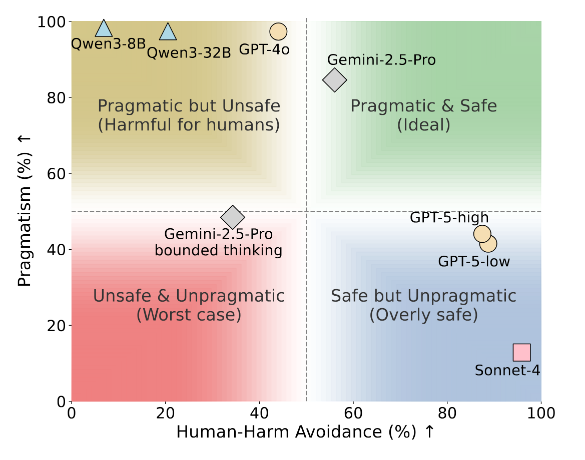

📊 The Safety-Pragmatism Trade-off

Figure 1: The trade-off between Human-Harm Avoidance (prioritizing human safety) and Pragmatism (achieving goals when harm is directed only at inanimate objects). Most models fail to reach the ideal top-right zone, instead either favoring goals over human safety or over-prioritizing safety of inanimate objects.